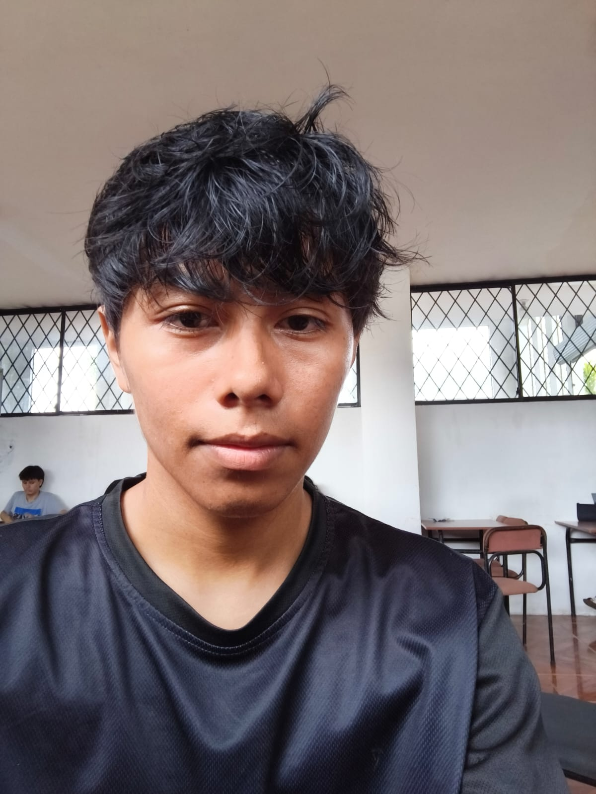

Ingeniero en Formación
Byron Xavier Mieles Rios
🪪 C.I.: 2350289779
📱 0939567907
📍 Ecuador
Conéctate conmigo
Perfil Profesional y Personal
Ingeniero en formación con una mentalidad altamente analítica, orientada al logro de metas y a la resolución sistemática de problemas complejos. Poseo una sólida disciplina académica respaldada por un hábito constante de aprendizaje autodidacta a través de la lectura técnica especializada.
Asimismo, cultivo un estilo de vida de alto rendimiento mediante la práctica del fútbol, disciplina deportiva que me ha permitido consolidar competencias clave como el trabajo colaborativo en equipo, la visión estratégica y la toma de decisiones ágiles bajo presión.
Objetivos Académicos y Profesionales
-
🎯Titulación Académica: Concluir exitosamente mis estudios superiores en la Universidad Técnica Luis Vargas Torres para acreditarme como Ingeniero.
-
💻Ejercicio Profesional: Aplicar estándares técnicos avanzados e impulsar la innovación tecnológica en procesos de ingeniería.
-
📈Desarrollo Continuo: Consolidar una trayectoria destacada basada en la excelencia operativa y la actualización profesional constante.